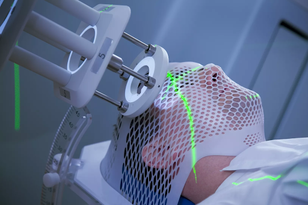

Job Description - Dosimetrists work with the radiation oncology team. They help treat cancer patients via radiation therapy. Medical dosimetrists are usually employed in hospitals or cancer treatment centers.

Salary Info - Dosimetrists earn between $81,000 and $112,000.
Job Availability - “The Bureau of Labor Statistics anticipates that employment will grow 14% between 2014 and 2024, much faster than the average for all occupations, for radiation therapists, which includes medical dosimetrists.”
Education Requirement - Dosimetrists need at least a bachelor’s degree and often a master’s in medical dosimetry. In addition, they must also pass a certification exam, interview and observation to become a fully licensed medical dosimetrist.